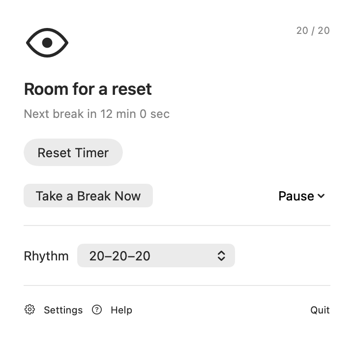
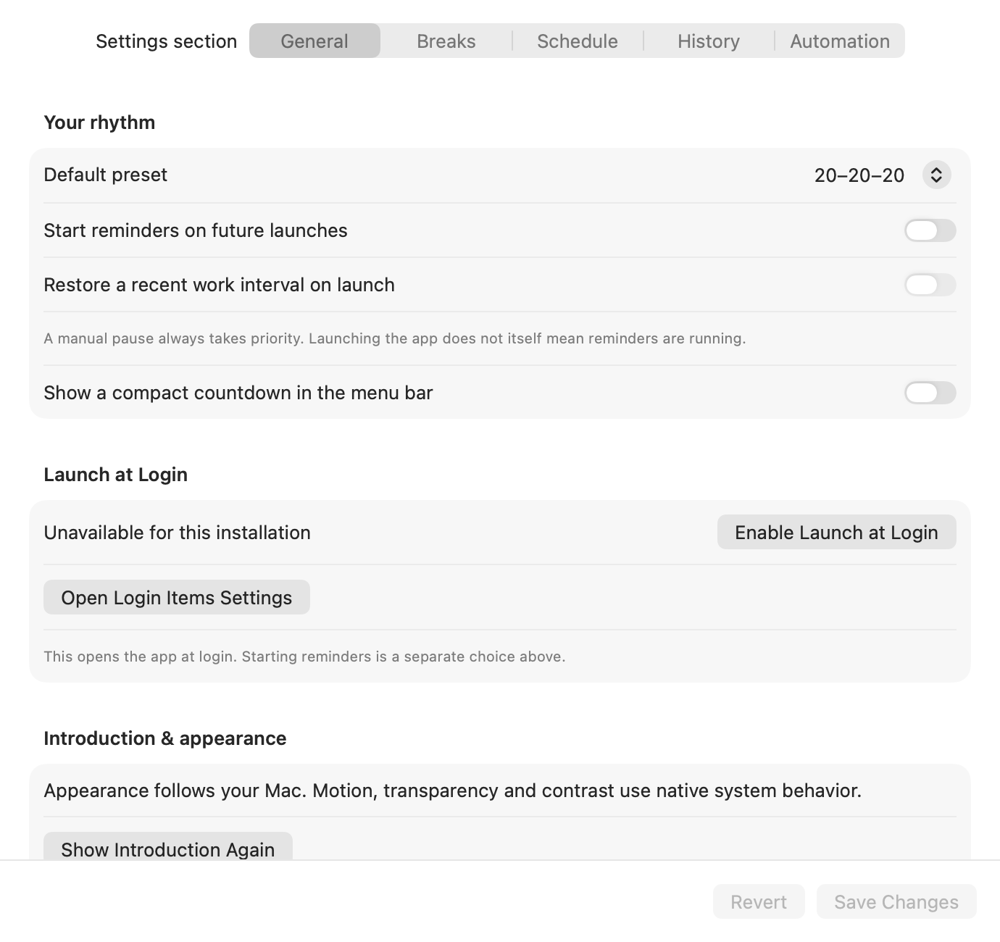

Pause with confidence.
Pause for 30 minutes, an hour, until your next eligible day, or indefinitely. Resetting a paused timer keeps it paused.
Private development preview · working name · not released or approved for publication
Features & how it works
Small controls, clear choices, and room to get on with your work.
At a glance
An open eye means a work interval is running. A closed eye means reminders are paused, waiting for your schedule, or suspended while the display or session is unavailable. A marker and plain text explain when a break is ready.
Click the eye to see the current state and Reset Timer. Option-click pauses or resumes; secondary-click opens quick actions.

Make it personal
Choose 20–20–20, Gentle, Focus, Screen-Heavy Day, or a validated custom routine. Work intervals range from 10 to 120 minutes. Ordinary breaks range from 20 seconds to 5 minutes.
Optional schedules and quiet hours keep recurring reminders inside the time you choose. Longer routines are off until you choose them.

Pause for 30 minutes, an hour, until your next eligible day, or indefinitely. Resetting a paused timer keeps it paused.
Snooze or skip a due reminder. If it goes unanswered, the regular cycle continues without counting a finished break.
Optional local history records app activity, not where you looked or how your eyes felt.
The app works offline.
No sign-in, cloud service, or account setup stands between you and a break.